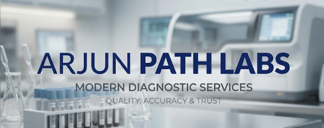

Health Tip of the Day
Regular health check-ups help detect conditions early. Get your annual blood and urine test done to stay ahead of potential health risks.
Accurate Diagnostics for Better Healthcare
Arjun Path Labs is a multi-specialty diagnostic center offering accurate and timely laboratory testing services, including our AI-enabled Urine Test Strip Reader System for fast, reliable results.

Regular health check-ups help detect conditions early. Get your annual blood and urine test done to stay ahead of potential health risks.